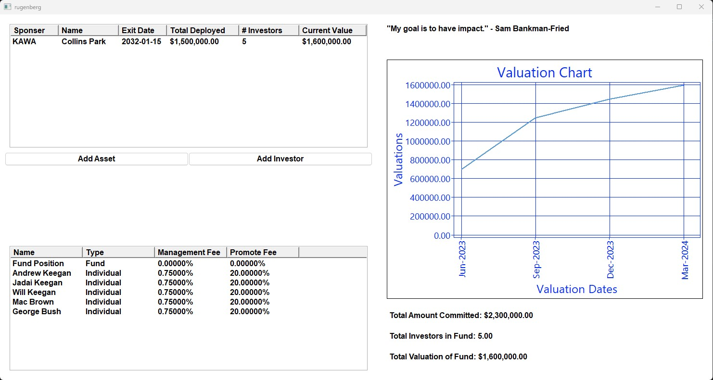
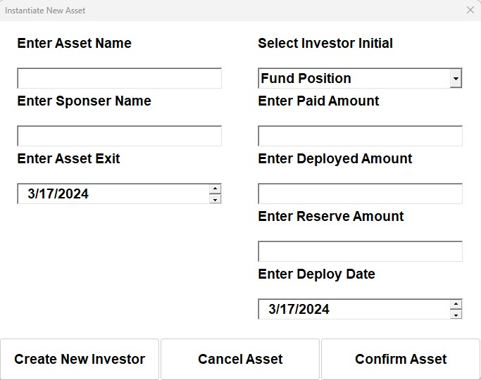
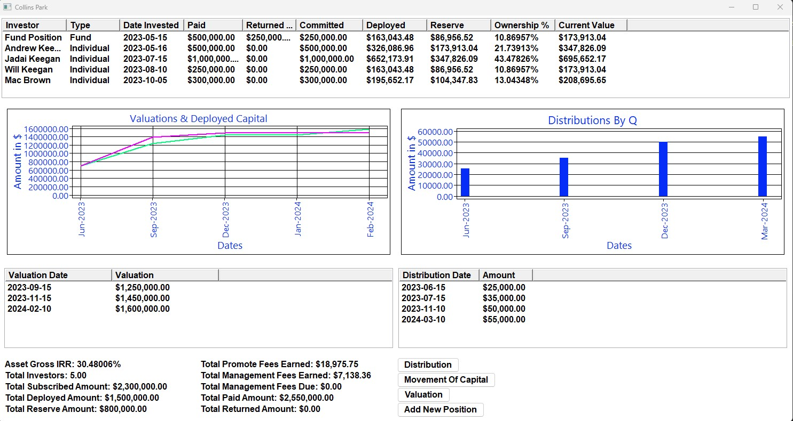
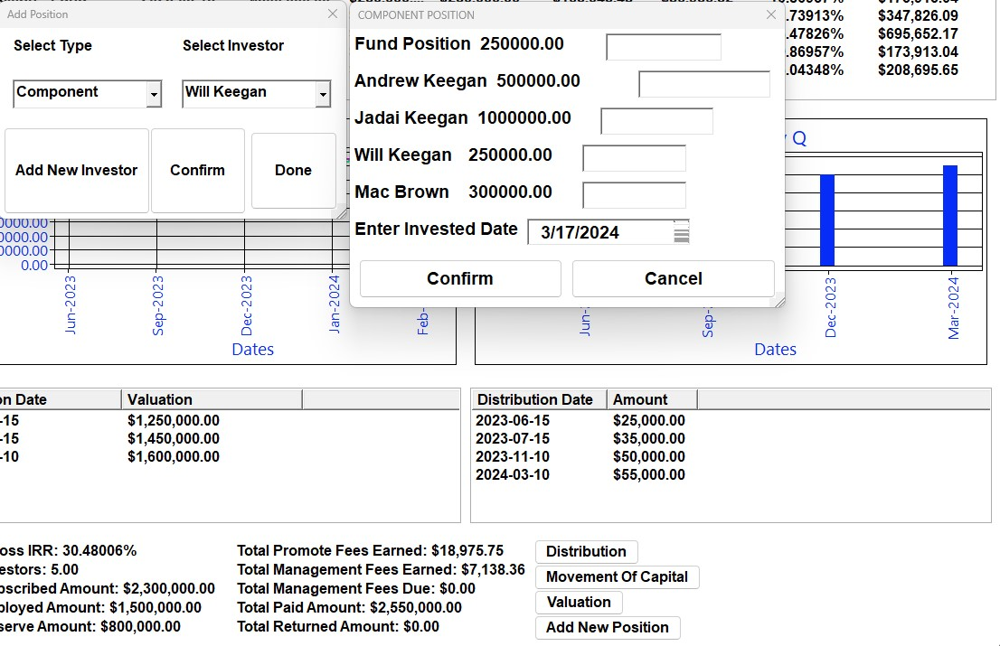
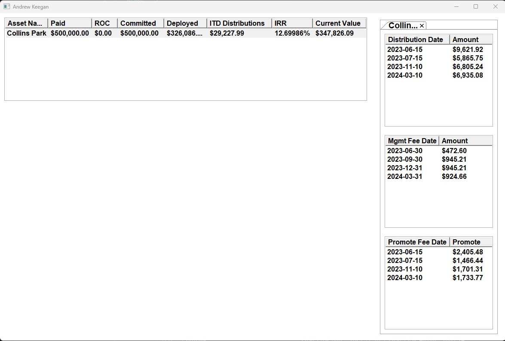

Appliation Highlights
Application main page

Upon launching the application, users are greeted with a meticulously designed main landing page that encapsulates the essence of the fund's
operations and its financial landscape. This interface is intuitively organized into three primary sections, each offering unique insights into the fund's performance and composition:
-
Asset Holdings Display: A VListCtrl component elegantly presents the fund's asset holdings, allowing users to easily browse and understand the diverse investments
that constitute the fund's portfolio. This visual representation not only provides a comprehensive overview of asset types and allocations but also enhances transparency
and investor confidence.
-
Investor Overview: Another VListCtrl is dedicated to showcasing the investors within the fund, offering a clear view of the participating entities or individuals.
This segment is crucial for understanding the fund's backing and the confidence placed in it by its investors, reflecting the fund's credibility and appeal in the
financial market.
-
Valuation Chart: The financial valuation of the fund over time is beautifully illustrated in a chart, segmented by quarters.
This visualization aids in tracking the fund's performance, highlighting trends, growth patterns, and potential areas for strategic adjustments.
It serves as a vital tool for investors and fund managers alike, facilitating informed decision-making based on historical data and projections.
Together, these elements combine to form a powerful dashboard that not only serves as the operational hub for users but also underscores the application's commitment to clarity, detail, and user engagement.
void MainFrame::setupLayout(){
for(auto&asset:portfolio.assetPtrs){
asset->SetCurrentValue();
asset->SetPositionValues();
asset->TriggerUpdateDerivedValues();
for(auto&position:asset->GetPositions()){
position->TriggerUpdateOfManagementFeeVector();
}
asset->TriggerUpdateOfDistributionsForPositions();
for(auto&position:asset->GetPositions()){
position->UpdateManagementFeesDue();
}
}
if(!portfolio.allInvestorPtrs.empty()){
portfolio.PopulateValuationMaps();
}
//main sizer for the page
auto mainSizer = new wxBoxSizer(wxHORIZONTAL);
//left sizer for the left side of the page needs to be vertical
wxBoxSizer* lSideSizer = new wxBoxSizer(wxVERTICAL);
auto buttonSizer = new wxBoxSizer(wxHORIZONTAL);
allAssetVListControl = new VListControl>(this, wxID_ANY,
wxDefaultPosition, wxDefaultSize);
if(!portfolio.assetPtrs.empty()){
allAssetVListControl->setItems(portfolio.assetPtrs);
}
addAssetButton = new wxButton(this, wxID_ANY, "Add Asset");
addInvestorButton = new wxButton(this, wxID_ANY, "Add Investor");
addInvestorButton->Bind(wxEVT_BUTTON, &MainFrame::OnAddInvestor, this);
addAssetButton->Bind(wxEVT_BUTTON, &MainFrame::OnAddAsset, this);
lSideSizer->Add(allAssetVListControl, 3, wxEXPAND | wxALL, 10);
buttonSizer->Add(addAssetButton,1,10);
buttonSizer->Add(addInvestorButton, 1,10);
lSideSizer->Add(buttonSizer, 2, wxEXPAND,10);
allAssetVListControl->Bind(wxEVT_LIST_ITEM_RIGHT_CLICK, &MainFrame::OnAssetVLCClick, this);
allAssetVListControl->Bind(wxEVT_LIST_ITEM_ACTIVATED, &MainFrame::OnAssetVLCClick, this);
allInvestorVListControl = new VListControl>(this, wxID_ANY, wxDefaultPosition, wxDefaultSize);
if(!portfolio.assetPtrs.empty()){
allInvestorVListControl->setItems(portfolio.allInvestorPtrs);
}
allInvestorVListControl->Bind(wxEVT_LIST_ITEM_RIGHT_CLICK, &MainFrame::OnInvestorVLCClick, this);
lSideSizer->Add(allInvestorVListControl, 3, wxEXPAND | wxALL, 10);
mainSizer->Add(lSideSizer, 5, wxEXPAND | wxALL, 10);
wxBoxSizer* rSideSizer = new wxBoxSizer(wxVERTICAL);
quoteOftheDatePanel = new wxPanel(this);
quoteOfTheDate = new wxStaticText(quoteOftheDatePanel, wxID_ANY, "");
int widthOfPAnel = quoteOftheDatePanel->GetMaxWidth();
wxFont quoteFont = wxFont(22, wxDEFAULT, wxNORMAL, wxFONTWEIGHT_BOLD, false);
quoteOfTheDate->Wrap(widthOfPAnel);
quoteOfTheDate->SetFont(quoteFont);
wxBoxSizer* TopRSiderSizer = new wxBoxSizer(wxVERTICAL);
TopRSiderSizer->Add(quoteOfTheDate,1, wxEXPAND | wxALL, 15);
rSideSizer->Add(quoteOftheDatePanel, 1, wxEXPAND | wxALL, 10);
// Create the holder panel
chartPanelHolderPanel = new wxPanel(this, wxID_ANY);
chartPanelHolderPanel->SetBackgroundColour(wxColor(0, 0, 0));
// Create a sizer for the holder panel
wxBoxSizer* holderSizer = new wxBoxSizer(wxVERTICAL);
chartPanelHolderPanel->SetSizer(holderSizer);
// Create the chart panel
wxChartPanel* chartPanel = new wxChartPanel(chartPanelHolderPanel, wxID_ANY);
chartPanel->SetBackgroundColour(wxColor(0, 0, 0));
// If there is an existing chart, delete it
if (chartPanel->GetChart() != nullptr) {
delete chartPanel->GetChart();
}
// Populate and set the new chart
Chart* valuationChart = PopulateDrawChart(portfolio);
if (valuationChart != nullptr) {
chartPanel->SetChart(valuationChart);
holderSizer->Add(chartPanel, 1, wxEXPAND);
}
// Add chartPanelHolderPanel to the right side sizer
rSideSizer->Add(chartPanelHolderPanel, 7, wxEXPAND | wxALL, 10);
wxPanel* botRSidePanel = new wxPanel(this);
botRSidePanel->SetBackgroundColour(wxColor(255,255,255));
totalInvestedText = new wxStaticText(botRSidePanel, wxID_ANY,"Total Amount Committed: $0.00");
totalInvestorCountText = new wxStaticText(botRSidePanel, wxID_ANY, "Total Investors in fund: 0");
totalValuationText = new wxStaticText(botRSidePanel, wxID_ANY, "Total Valuation: $0.00");
wxBoxSizer* botRSiderSizer = new wxBoxSizer(wxVERTICAL);
botRSiderSizer->Add(totalInvestedText, 1, wxEXPAND|wxALL, 5);
botRSiderSizer->Add(totalInvestorCountText, 1, wxEXPAND| wxALL, 5);
botRSiderSizer->Add(totalValuationText, 1, wxEXPAND | wxALL, 5);
botRSidePanel->SetSizer(botRSiderSizer);
//add the bottom right side panel which houses the static text lines
rSideSizer->Add(botRSidePanel, 2, wxEXPAND | wxALL, 10);
//add right side sizer to the main sizer
mainSizer->Add(rSideSizer, 5, wxEXPAND | wxALL,10);
mainSizer->Layout();
//set mainframe sizer to be the main sizer here
#ifdef __WXMAC__
wxFont font = wxFont(14,wxDEFAULT, wxNORMAL,wxFONTWEIGHT_BOLD, false);
wxColor bgColor = wxColor(255,255,255);
wxColor fgColor = wxColor(0, 0, 0);
allAssetVListControl->SetBackgroundColour(bgColor);
allAssetVListControl->SetForegroundColour(fgColor);
allAssetVListControl->SetFont(font);
allInvestorVListControl->SetBackgroundColour(bgColor);
allInvestorVListControl->SetForegroundColour(fgColor);
allInvestorVListControl->SetFont(font);
addAssetButton->SetBackgroundColour(bgColor);
addAssetButton->SetForegroundColour(fgColor);
addAssetButton->SetFont(font);
addInvestorButton->SetBackgroundColour(bgColor);
addInvestorButton->SetForegroundColour(fgColor);
addInvestorButton->SetFont(font);
botRSidePanel->SetFont(font);
totalInvestedText->SetFont(font);
totalInvestedText->SetForegroundColour(fgColor);
totalInvestorCountText->SetFont(font);
totalInvestorCountText->SetForegroundColour(fgColor);
totalInvestedText->SetFont(font);
totalInvestedText->SetForegroundColour(fgColor);
totalValuationText->SetFont(font);
totalValuationText->SetForegroundColour(fgColor);
botRSidePanel->SetForegroundColour(fgColor);
this->SetBackgroundColour(bgColor);
#endif
this->Bind(wxEVT_SIZE, &MainFrame::OnFrameResizeForQuote, this);
this->SetSizer(mainSizer);
this->Layout();
this->Refresh();
this->Update();
}
This application incorporates a preprocessor directive tailored for WXMAC, ensuring that the user interface maintains a
consistent aesthetic across both macOS and Windows environments. This adjustment is particularly necessary due to wxWidgets'
ability to provide a native widget feel, which can lead to discrepancies under different system settings, such as night mode. By
implementing specific styling directives, the application guarantees a uniform user experience, regardless of the operating system preferences or settings.
Within the application's mainframe, users are presented with a variety of actions and choices that enhance their interaction with the fund's operations.
Among these options is the ability to add a new investor to the fund, as well as the incorporation of new assets. When introducing a new asset, users are prompted to
designate an initial investor, marking the commencement of capital deployment into the asset. Should an individual not be selected during this process,
the application defaults to assigning a "Fund" position. This approach facilitates the initial use of general fund capital for asset acquisition,
which can subsequently be allocated to individual investors in a component-based arrangement. This flexibility supports dynamic investment strategies and fund management,
ensuring that users can efficiently manage and expand the fund's portfolio.

Beyond the available buttons, interaction with the application is further enriched by the capability to right-click or double left-click on a row within the asset VListCtrl,
triggering an 'asset pop-out' view. Similarly, engaging in these actions within the investor VListCtrl opens an 'investor pop-out' view. Each of these pop-out views offers
detailed insights and functionalities specific to the selected asset or investor, enhancing the user's navigational and operational experience within the application.
Asset Popout

Upon selecting a row in the asset VListCtrl through either a right-click or a double left-click, users are directed to the asset's main control panel. This interface is the
central hub for managing a specific asset within the fund, designed to streamline and simplify asset administration.
Within this panel, users have access to a variety of actions, facilitated by four distinct buttons. These buttons are labeled for specific operations:
initiating a distribution, updating asset valuation, adding a new position, and reallocating funds between deployable and reserved capital. Each action is designed to
enhance the asset's management process, allowing for efficient and effective fund operation.
Additionally, the asset popout view displays critical statistics related to the asset, such as the Internal Rate of Return (IRR), the total number of investors, as
well as deployed and reserved capital amounts among others. This comprehensive overview provides users with immediate access to key financial metrics and asset details,
enabling informed decision-making and strategic asset management.

Included is an illustrative example showcasing the process of adding a new component position. This procedure intricately links the position to a selected investor.
The committed amount for this new position is determined by aggregating the available amounts from existing positions, as displayed on the right side of the interface,
where each position's available capital is listed.
For instance, if the entire $250,000 available from the fund's position is allocated to this new component, it triggers a capital movement event.
This results in the fund's position being adjusted to a zero balance in its committed amount and percentage ownership for this particular asset.
Such a scenario effectively signifies the fund's own capital exit from this asset, illustrating the dynamic nature of fund management and the
strategic reallocation of capital within the application.
Investor Popout

Upon interacting with the investor VListCtrl on the main frame, users are navigated to a detailed display page dedicated to showcasing specific investor information.
Currently, this page is designed purely for display purposes, without interactive functionalities for the user.
At the forefront, a VListCtrl panel spans the top of the page, aggregating and presenting data on assets in which the investor holds stakes.
To enhance clarity and simplicity, positions held in the same asset are consolidated, appearing as a single row in the display. Adjacent to this, a
wxAuiNotebook serves as a comprehensive ledger, itemizing the distinct assets associated with the investor, alongside records of distributions received,
management fees due or paid, and performance fees accrued from each position.
This segment of the application stands as a focal point for ongoing enhancements. Future updates are anticipated to introduce functionalities such as an
'export to CSV/PDF' feature, aimed at streamlining the generation of quarterly statements for clients, further enriching the user experience and the application's
utility.